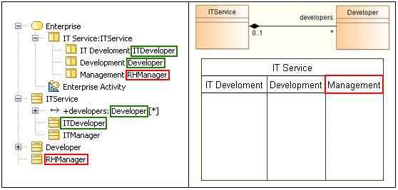

A Classifier represented by a sub ActivityPartition must be a nested Classifier or the contained end of a strong composition association of the super ActivityPartition’s represented Classifier.
If a non-external ActivityPartition represents a Classifier and is contained in another ActivityPartition, then the containing ActivityPartition must represent a Classifier, and the Classifier of the sub ActivityPartition must be nested in the Classifier represented by the containing ActivityPartition, or be at the contained end of a strong composition association with the Classifier represented by the containing ActivityPartition.
Example:

The “IT Development” ActivityPartition is valid because it represents the “ITDeveloper” Classifier, which is a nested Classifier of the “ITService” Classifier.
The “Development” ActivityPartition is valid because it represents the “Developer” Classifier, which is at the end of a strong composition association of the “ITService” Classifier. Note that any other association would make the rule invalid.
The “Management” ActivityPartition is invalid because it represents the “RHManager” Classifier, which has nothing to do with the “ITService” Classifier.
Getting an R1090 error indicates an inconsistency between the organization of the ActivityPartitions and the structure of the Classifiers they represent. The solution usually implies the reorganization of the ActivityPartitions to respect the design expressed by the structure of the represented Classifiers, or the modification of the design of the represented Classifiers so they respect the responsibility scheme expressed by the organization of the ActivityPartitions.